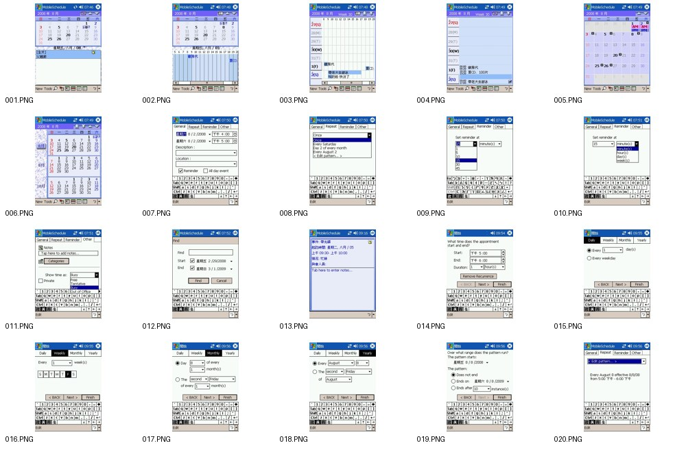
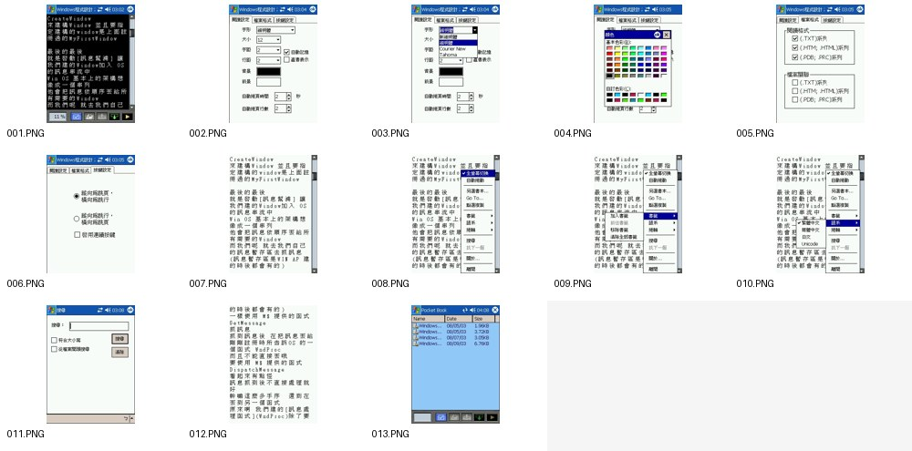
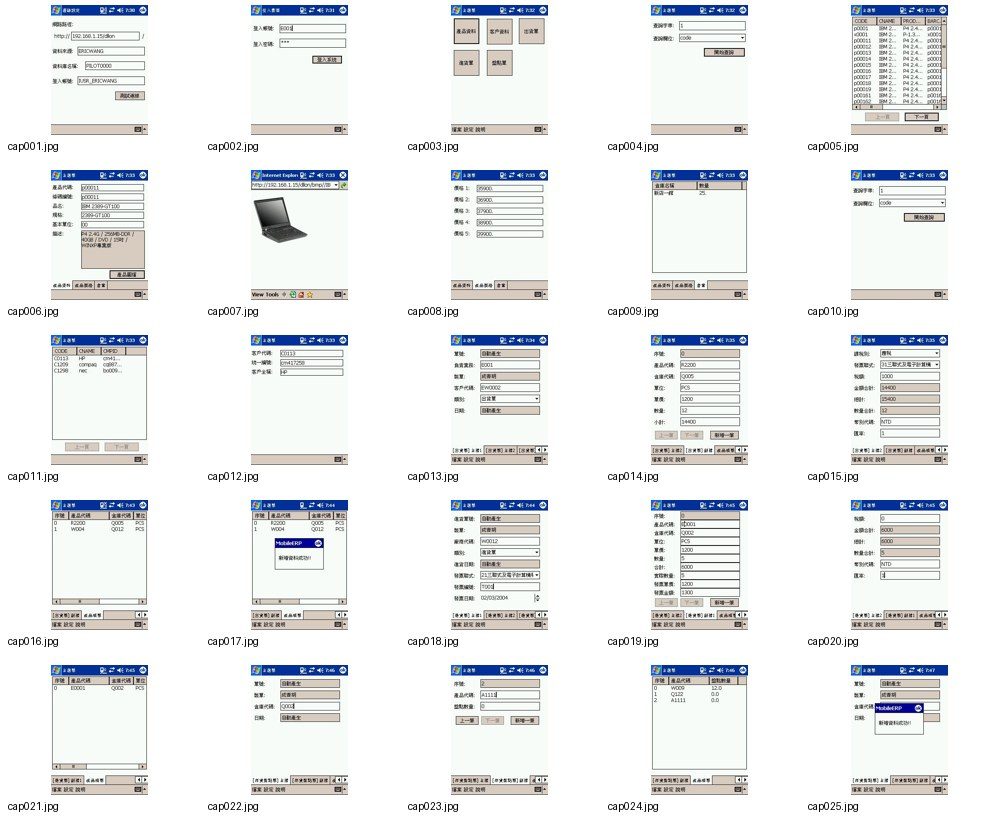
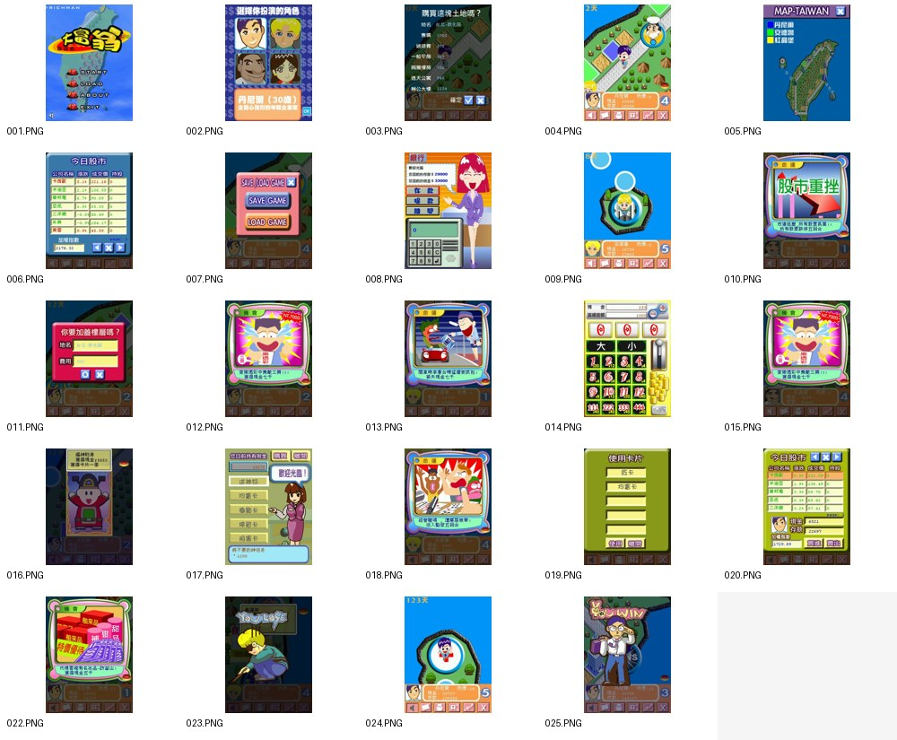
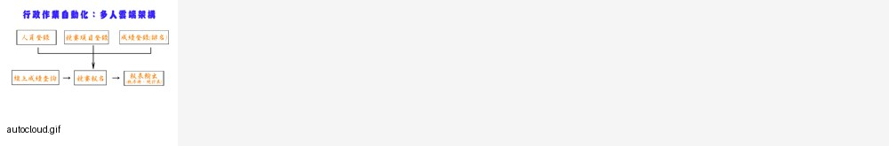

十一之一、早期產品實績畫面補充
用途：這批畫面用來補強「自 2001 年起即有產品經理與產品落地經驗」的可視化證據。面試時不需要逐張展示；若 Gary 想看具體作品，可挑 2–3 類說明你曾處理過行動裝置 UI、資料管理、內容閱讀、商業流程與遊戲化互動。
講法重點不是「畫面很新」，而是：在早期 Windows Mobile／Pocket PC 與 Web 環境限制下，已經能把需求整理成可操作的產品流程，並兼顧資料輸入、同步、權限、內容呈現與使用者互動。

Mobile Schedule｜行動排程／提醒系統
展示月曆、週檢視、日程編輯、重複規則、提醒、搜尋與分類等 PDA 時代的行動資訊管理流程。

eBook｜行動電子書／文字閱讀器
展示文字閱讀、字型、顏色、格式設定、選單操作與檔案列表，屬於早期行動內容產品。

ERP｜行動商務／資料管理系統
展示登入、主選單、商品與客戶資料、訂單、庫存、數量、金額與同步狀態等企業流程。

Rich｜遊戲化互動產品
展示角色選擇、地圖、任務、題目、股市／消費情境與即時回饋等互動流程。

nycsport｜行政作業自動化流程
展示多人彙編、批次資料轉換與資料回傳的流程圖，適合用來說明資料處理與作業自動化經驗。
- 完整截圖已放在 `../assets/products/`，主頁先用 contact sheet 快速展示，不讓面試教材變得太長。
- 若被問到自有公司與作品關係，仍維持 v1.3.0 的定位：這些是過往產品與接案經驗證據，本次面試是 full-time 正職求職。